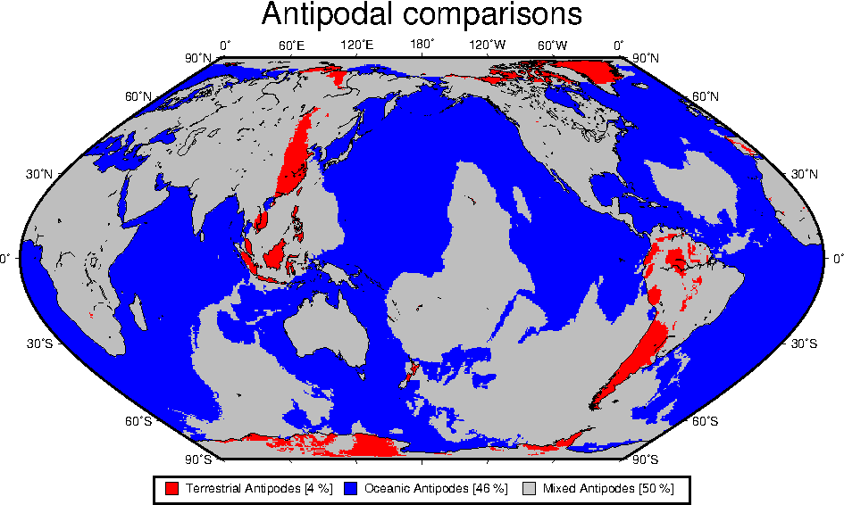

Example 25. We have all asked ourselves "what is exactly
on the other side of the Earth". That point is called an
antipode, and here we graph the distribution of antipodes
classified as being land-land, ocean-ocean, or mixed-type.
 View GMT script.
View GMT script.
 Download zipped PostScript file.
Download zipped PostScript file.
 Back
Back